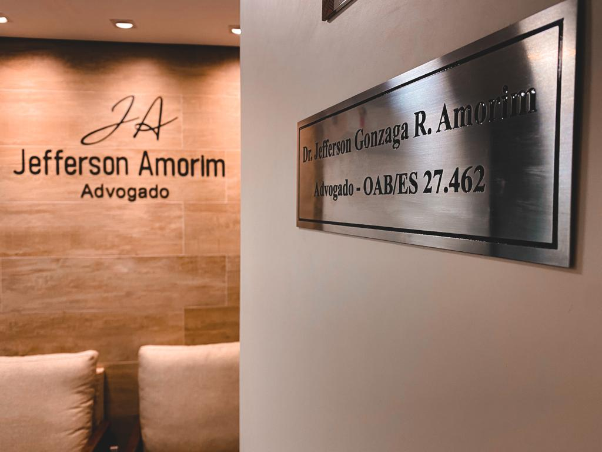

Direito Civil
Contratos, indenizações, responsabilidade civil e demais questões patrimoniais.
OAB/ES 27.462 · Cariacica, ES
Escritório especializado em Direito Civil, Previdenciário, Família, Criminal, Trabalhista, Administrativo e Empresarial. Atendimento próximo e transparente, do primeiro contato até a solução do seu caso.

O escritório
Fundado em 2017 e localizado em Cariacica, nas proximidades do Shopping Moxuara, o escritório Jefferson Amorim Advocacia nasceu com um compromisso simples: oferecer serviços jurídicos de alto nível técnico com um atendimento próximo, claro e humano — sem o distanciamento que costuma marcar a relação entre advogado e cliente.
Hoje contamos com uma equipe multidisciplinar, incluindo estagiários de Direito devidamente inscritos na OAB, para acompanhar cada etapa do seu processo com agilidade diante dos prazos — mesmo diante da conhecida morosidade do Judiciário brasileiro.
Especialidades
Cada área é conduzida com estudo aprofundado da legislação e da jurisprudência mais recente, incluindo as mudanças trazidas pela Emenda Constitucional 103/2023 no Direito Previdenciário.
Contratos, indenizações, responsabilidade civil e demais questões patrimoniais.
Aposentadorias, benefícios do INSS e revisões, à luz da EC 103/2023.
Divórcios, guarda de filhos, pensão alimentícia e partilha de bens.
Defesa técnica em crimes contra a pessoa, patrimônio e crimes financeiros.
Defesa de empregados e empregadores em verbas rescisórias e passivos trabalhistas.
Reintegração de candidatos em concursos públicos e questões contra a administração.
Cobranças, administração de condomínios e consultoria jurídica empresarial.
Quem conduz o seu caso
OAB/ES 27.462
Graduado pela PIO XII, com pós-graduação em Direito Processual Civil pela FDV e pós-graduação em Direito Previdenciário pela Damásio. Atua diretamente em cada fase processual, com atenção especial à comunicação clara com o cliente.
Por que este escritório
Acompanhamento ativo de cada processo para reduzir o tempo de espera do cliente.
Linguagem clara, escuta atenta e proximidade real com quem confia o caso a nós.
Orientação honesta sobre riscos e chances reais do processo, sem promessas vazias.
Emissão de nota fiscal para pessoa física e jurídica, com total transparência.
Reputação
Avaliações reais de clientes, direto do perfil público do escritório no Google — sem edição.
“Excelente advogado, contratei e ganhou a liminar do meu caso no mesmo dia. O cara é bom no que faz, advogado forte, recomendo de verdade.”
Mateus Souza
“Advogado extremamente competente e humano. Sempre disponível para orientar, explica tudo de forma clara e demonstra muito comprometimento com o cliente.”
Rayanne Araujo Marques
“Tive uma excelente experiência com o Dr. Jefferson Amorim. Muito esclarecedor. Recomendo para quem busca um advogado sério, ético e eficaz!”
Wellika Tomaz
“Advogado muito atencioso e eficiente! O que muitos advogados não estavam conseguindo resolver, ele conseguiu resolver em pouco tempo. Nota 10/10.”
Luciana Ferreira
“Conhecimento, honestidade e agilidade! Resolveu tudo em tempo recorde, daria 10 estrelas fácil.”
Andreive Bernabé
“Atendimento de excelência! Ética, profissionalismo e eficiência.”
Juliana Santos
Fale conosco
Atendimento presencial em Cariacica/ES (próximo ao Shopping Moxuara) ou pelo WhatsApp, com retorno rápido.